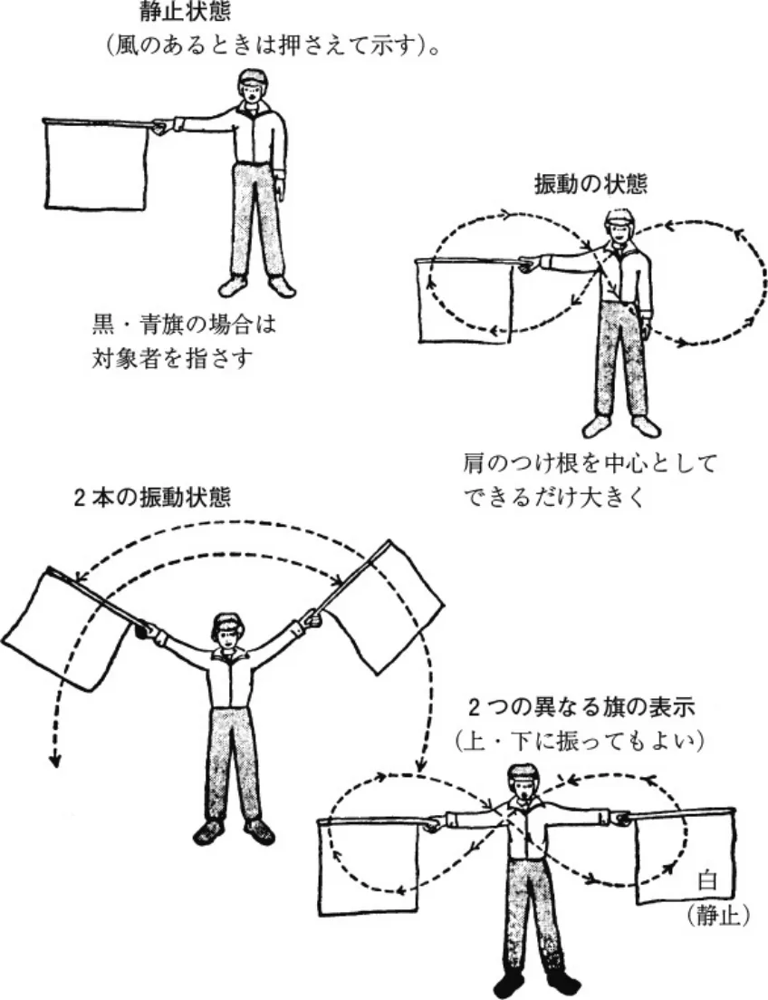

講習会開設規定
JAF の公式サイトではありません。JAF が公開する PDF を自動変換した非公式の検索用アーカイブです。記載内容は必ず JAF の原本 PDF で出典をご確認ください。 検索と AI 質問つきのビューアで開く
P.1１９６５年１２月 ２日制 定１９６６年 １月 １日改 定１９６７年 １月 １日改 定１９６８年 １月 １日改 定１９７０年 １月 １日改 定１９７３年 ９月２５日改 定１９７４年 １月 １日改 定１９７７年 ７月２６日改 定１９８４年１０月１９日改 定１９８５年 ７月２９日改 定１９８６年 １月 １日改 定１９９０年 １月 １日改 定
講習会開設規定
１９９０年１０月２３日改 定１９９４年１０月１３日改 定１９９５年 ４月 １日施 行１９９８年 ７月２７日改 定１９９９年 １月 １日改 定１９９９年 ７月２８日改 正２０００年 ４月 １日施 行２０００年 ８月 １日改 正２０００年１０月２６日改 正２０００年１１月 １日施 行２００１年 １月 １日施 行２００１年 ３月３０日改 正
２００１年 ５月 １日施 行２００３年１２月 ３日改 正２００４年 １月 １日施 行２００６年 ８月 ９日制 定２００７年 １月 １日施 行２００９年 ７月３０日改 正２００９年１１月 １日施 行２０１１年１１月２４日改 正２０１２年 ４月 １日施 行２０１２年１１月２９日改 正２０１３年 １月 １日施 行２０１４年 １月３０日改 正
２０１４年 ４月 １日施 行２０２１年 ３月２５日改 正２０２１年 ４月 １日施 行２０２１年 ７月２８日改 正２０２２年 １月 １日施 行２０２２年 ３月２８日改 正２０２２年 ４月 １日施 行２０２３年 ３月２３日改 正２０２３年 ４月 １日施 行２０２5年 ４月 １日改正施行
第１章 Ｂライセンス講習会
第１条 目 的
本規定は、ＪＡＦ発給の国内競技運転者（兼参加者）許可証Ｂ（以下Ｂライセンスという）および公認審判員許可証Ｂ３級取得希望者のために開催される「Ｂライセンス講習会」の認定に関する規定である。
第２条 講習会の開設
ライセンス講習会は次のクラブおよび団体のみが開設できる。
１．ＪＡＦ本部および地方本部ならびに支部
２．準加盟・加盟・公認のクラブおよび加盟・公認の団体
３．その他ＪＡＦが特に認めた団体
第３条 講習会の開設場所
主催者は、講習会を行うに適した場所を講習会場として確保しなければならない。なお、オンラインでの講習会を行う場合はこの限りではない。
第４条 開設申請の手続き
１．開設予定日の１ヵ月前までに所定の申請方法により、ＪＡＦに申請すること。
２．申請の際に開設申請料として１件につき３，６００円（消費税込）を必要とする。
第５条 講義科目および教材
講義科目は「自動車スポーツの概要」につき１時間３０分以上とし、教材として次のものを講習時に必携していなければならない。
１．モータースポーツハンドブック
第６条 講師の認定
講師は自動車スポーツの諸規則に精通した者とし、講習会の主催者が開設認定の申請の際、次のうちからこれを委嘱してＪＡＦの承認を得るものとする。
１．１級公認審判員許可証の保持者
２．その他ＪＡＦが特に認めた者
注）講師の補助員の資格については問わない。
第７条 受講者および受講料
１．受講資格は普通自動車以上の運転免許証の保持者とする。
ただし、何らかの障がい者手帳を持つ者から受講の申込があった場合、講習会の主催者は、ＪＡＦスポーツ資格登
P.2録規定第２条に基づき、受講に先立ち許可証を取得する適性についてＪＡＦの審査を受け、承認を得なければならないことを知らしめなければならない。
２．受講料は１人４，１００円（消費税込）以内とする。ただし、ＪＡＦ指定の教材費は実費とする。
なお、ＪＡＦが主催する講習会の場合はこの限りではない。
第８条 受講者に対する注意事項
ライセンス講習会の主催者は受講者に対し、次の事項を周知徹底させなければならない。
１．ライセンス申請期間について、講習会受講後３０日以内にＢライセンスの申請手続きを行わないと無効となること。
２．ライセンス申請手続き方法について（すなわち必要とする書式の記載事項、添付書類、ＪＡＦ会員の資格を必要とすること等）。
３．上級申請に必要とする条件およびその手続き方法について。
第９条 査察委員の派遣
ＪＡＦは講習会に対し随時査察委員を派遣することができる。査察委員は講習会の運営に対し本規定に基づく指示を行うことができる。
第１０条 主催者の報告義務
１．主催者は講習会終了後７日以内に、次の事項をＪＡＦ所定の申請方法により、ＪＡＦに報告しなければならない。
１）開催日時および場所
２）講師の氏名
３）講義内容および時間
４）受講者名簿
第１１条 講習会の延期、取り止め
主催者が講習会を延期または取り止める場合は、その開設予定日の１週間前（不可抗力の場合を除く）までにＪＡＦに理由を付して届出を行わなければならない。
第１２条 講習会主催者、講師の遵守事項
講習会主催者および講師は本規定を遵守し、講習会を円滑に運営すること。
第２章 Ａライセンス講習会
第１３条 目 的
本規定は、ＪＡＦ発給の国内競技運転者（兼参加者）許可証Ａ（以下Ａライセンスとする）取得希望者のために開催される「Ａライセンス講習会」の認定に関する規定である。
第１４条 講習会の開設
Ａライセンス講習会は次のクラブおよび団体のみ開設できる。
１．ＪＡＦ本部および地方本部
２．加盟・公認のクラブおよび団体
３．その他ＪＡＦが特に認めた団体
第１５条 講習会の開設場所
ＪＡＦ公認レーシングコースとする。
公認レーシングコース以外で開設する場合は、ＪＡＦの承認を得るものとする。
第１６条 開設申請の手続き
１．開設予定日の１ヵ月前までに所定の申請方法により、ＪＡＦに申請し、あわせて講習内容および時間割を提出する
P.3ものとする。
２．申請の際に開設申請料として１件につき６，９００円（消費税込）を必要とする。
第１７条 講習内容および試験
１．基礎講義 モータースポーツハンドブック………３０分以上
※国内Ｂを所持しない者が受講するものとする。
２．講義
１）国内競技規則………３０分以上
２）競技車両規則………３０分以上
（国際モータースポーツ競技規則付則Ｊ項を含む）
３）国際モータースポーツ競技規則付則Ｈ項………３０分以上
４）レーシング講義……３０分以上
５）検定試験……………３０分以上
３．実技
（１）基礎実技……………６０分以上
（２）走行実技試験………６０分以上
ＪＡＦスポーツ資格登録規定第２条２項に規定する「限定国内競技運転者許可証Ａ」の申請条件を満たした者が受講する場合は、基礎実技と走行実技試験は免除する。
４．検定試験は、国内競技規則および国内競技車両規則、Ｈ項より抽出した問題とする。ただし受講者は上記の規則書等を試験の際に参照してもよい。
５．走行実技試験は、国際モータースポーツ競技規則の付則Ｈ項に基づく信号合図およびレーシングマナー等によるものとする。
６．試験は主任講師が責任をもって採点を行うものとする。
第１８条 講師の選定
講師は自動車競技の諸規則に精通した者ならびにレーシングの実技経験の豊富な者とし、講習会の主催者が開設認定の申請の際、次のうちから主任講師１名を含みこれを委嘱し、ＪＡＦの承認を得るものとする。
１．国内競技規則の講師：公認審判員許可証Ａ１級の保持者
２．競技車両規則の講師：公認審判員許可証技術Ａ１級の保持者
３．国際モータースポーツ競技規則付則Ｈ項の講師：公認審判員許可証コースＡ１級の保持者
４．走行実技の講師：国際競技運転者許可証Ａ、Ｂ、Ｃ−Ｃの資格保持者または国内競技運転者許可証Ａの資格保持者でＪＡＦが特に認めた者
５．レーシング講義の講師：走行実技の講師もしくは主任講師
注）講師の補助員の資格については問わない。
第１９条 受講資格および受講料
１．国内Ｂを所持する者：
①受講前２４ヵ月以内にＪＡＦ公認競技会（スピード競技、ラリーあるいはソーラーカーレース）に１回以上出場し、競技長によって成績（順位）認定された者。（リタイア、ミスコース等は実績として認められない。）とし、受講料は２１，２００円以内とする。
②受講前２４ヵ月以内にＪＡＦ公認のレーシングコースにおいて２５分以上のスポーツ走行経験があり、走行したコースからの走行証明を有する者とし、受講料は２１，２００円以内とする。
２．国内Ｂを所持しない者：
受講前２４ヵ月以内にＪＡＦ公認レーシングコースにおいて５０分以上のスポーツ走行の経験があり、走行したコースからの走行証明を有する者とし、受講料は、２５，１００円以内とする。
３．ＪＡＦスポーツ資格登録規定第２条２項に規定する、「限定国内競技運転者許可証Ａ」の申請条件を満たした者が受講する場合は、受講料は２１，２００円以内とする。
４．限定国際ソーラーカー競技運転者許可証を所持し、受講前２４ヵ月以内にＪＡＦ公認のソーラーカーレースの完走実績を有する者とし、国内Ｂの所持の有無に関わらず受講料は２１，２００円以内とする。
P.4５．いずれの場合も受講料は消費税込みとし、ＪＡＦ指定の教材費は実費とする。
６．受講者人員は原則として２０名以上とし、実技科目の講師１人につき受講者は１０名以内を原則とする。
なお、何らかの障がい者手帳を持つ者から受講申込があった場合、講習会の主催者は、ＪＡＦスポーツ資格登録規定第３条に基づき、受講に先立ち許可証を取得する適性についてＪＡＦの審査を受け、承認を得なければならないことを知らしめなければならない。
第２０条 合格者に対する注意事項
講習会の主催者は、試験合格者に対し次の事項を周知徹底させなければならない。
１．ライセンス申請期間について、試験合格後３０日以内にＡライセンスの上級申請手続きを行わないと無効になること。
２．ライセンス申請手続き方法について（すなわち必要とする書式の記載事項、添付書類、ＪＡＦ会員の資格を必要とすること等）。
３．上級申請に必要とする条件およびその手続き方法について。
第２１条 査察委員の派遣
ＪＡＦは講習会に対し随時査察委員を派遣することができる。査察委員は講習会の運営に対し本規定に基づく指示を行うことができる。
第２２条 主催者の報告義務
主催者は、講習会終了後７日以内に次の事項を所定の申請方法によりＪＡＦに報告しなければならない。
１．開催日時および場所
２．講師の氏名
３．講習内容およびその時間割
４．試験合格者の氏名とそのＢライセンス番号
第２３条 講習会の延期、取り止め
主催者が講習会を延期または取り止める場合にはその開設予定日の１週間前（不可抗力の場合を除く）までにＪＡＦに理由を付して届出を行わなければならない。
第２４条 講習会主催者、講師および受講者の遵守事項
講習会主催者および講師は本規定を遵守し、講習会を円滑に運営することとし、受講者は講習会主催者の指示に従い講義を受講すること。
第３章 公認審判員講習会
第２５条 目 的
本規定は、ＪＡＦ発給の公認審判員許可証の取得希望者のために開催される「公認審判員講習会」の認定に関する規定である。
第２６条 講習会の開設
公認審判員講習会は次のクラブおよび団体のみが開設できる。
１．ＪＡＦ本部および地方本部
２．加盟・公認クラブおよび団体
３．その他ＪＡＦが特に認めた団体
第２７条 講習会の開設場所
公認審判員Ｂの実技講習についてはＪＡＦ公認スピード競技コース、公認審判員Ａの実技講習についてはＪＡＦ／Ｆ ＩＡ公認レーシングコースとする。なお、講義については講習会を行うに適した場所を講習会場とすることができる。
P.5第２８条 開設申請の手続き
１．開設予定日の１ヵ月前までに所定の申請方法によりＪＡＦに申請し、あわせて講習内容および時間割を提出するものとする。
２．申請の際に開設申請料として１件につき３，６００円（消費税込）を必要とする。
第２９条 講習会の分類
講習会はＡおよびＢそれぞれの１級と２級とに分けられ、かつ役務種類ごとに、技術講習会、コース講習会、計時講習会の３種類に分けられる。講習会は、それぞれの分類を組み合わせて実施することが出来る。
Ｂ３級公認審判員講習会はＢライセンス講習会を以てこれに代える。
第３０条 講師の選定
講師は次のうちから主催者が、主任講師１名を含みこれを委嘱し、ＪＡＦの承認を得るものとする。
１．各科目ごとに１級公認審判員許可証の保持者
２．その他ＪＡＦが特に認めた者
注）講師の補助員の資格については問わない。
第３１条 受講資格
講習会の受講資格は次の通りとする。
なお、受講者は受講する前に現在の審判員許可証を取得してから所定の役務実績を有すること。
１．Ａ２級の所持者：Ａ１級およびＢ１級の審判員講習課程
２．Ｂ１級の所持者：Ａ１級の審判員講習課程
３．Ｂ２級の所持者：Ｂ１級およびＡ２級の審判員講習課程
４．Ｂ３級の所持者：Ａ２級およびＢ２級の審判員講習課程
第３２条 受講料
受講料は１種目につき１２，７００円（消費税込）以内とし、他の種目を同時に受講する場合は４，１００円（消費税込）の割り増しとする。
ただし、ＪＡＦ指定の教材費は実費とする。
第３３条 受講者に対する注意事項
講習会の主催者は、受講者に対し次の事項を周知徹底させなければならない。
１．公認審判員規定に基づきそれぞれ定められた役務執行を行い、資格認定試験を受け合格した後でなければ上級申請ができないこと。
２．申請資格を得た日から３０日以内に申請手続きを行わないと無効になること。
３．公認審判員許可証ＡおよびＢの上級申請資格について。
第３４条 査察員の派遣
ＪＡＦは講習会に対し随時査察委員を派遣することができる。査察委員は講習会の運営に対し、本規定に基づく指示を行うことができる。
第３５条 主催者の報告義務
主催者は、講習会終了後７日以内に次の事項を所定の申請方法によりＪＡＦに報告するものとする。
１．開催日時および場所
２．講師の氏名
３．講習内容およびその時間割
４．試験合格者の氏名、ライセンス番号
P.6第３６条 講習課程
講習課程（科目および時間数）および試験については次の通りとする。
講義内容は各等級にふさわしい内容とすること。
| 種 目 科 目 | コース ２ 級 | コース １ 級 | 技術 ２級 | 技術 １級 | 計時 ２級 | 計時 １級 |
| 〔講義〕 | ||||||
| 国内競技規則 | 30分以上 | 30分以上 | 30分以上 | 30分以上 | 30分以上 | 30分以上 |
| 国内競技車両規則 | 60分以上 | 60分以上 | ||||
| 付則Ｊ項 | 30分以上 | 30分以上 | ||||
| 付則Ｈ項 | 60分以上 | 30分以上 | 30分以上 | |||
| 国際モータースポーツ競技規則 | 30分以上 | 30分以上 | 30分以上 | |||
| レーシング講義 | 30分以上 | 30分以上 | ||||
| 車両公認書 | 30分以上 | 30分以上 | ||||
| 計測器具 | 60分以上 | 60分以上 | ||||
| 〔実技〕 | ||||||
| 実技講習（消火救急含む） 研究討論会 | 60分以上 | 60分以上 30分以上 | 60分以上 | 60分以上 30分以上 | 60分以上 | 60分以上 30分以上 |
| 講習時間合計 | ３時間 以上 | ３時間 30分 以上 | ３時間 30分 以上 | ４時間 30分 以上 | ３時間 以上 | ３時間 30分 以上 |
検定試験……６０分以上
検定試験は国際モータースポーツ競技規則とその付則、国内競技規則および国内競技車両規則、Ｈ項より抽出し出題される。ただし受講者は上記の規則書等を試験の際に参照してもよい。
試験は主任講師が責任をもって採点を行うものとする。
第３７条 講習会の延期、取り止め
主催者が講習会を延期または取り止める場合は、その開設予定日の１週間前（不可抗力の場合を除く）までにＪＡＦに理由を付して届出を行わなければならない。
第３８条 講習会主催者、講師および受講者の遵守事項
講習会主催者および講師は本規定を遵守し、講習会を円滑に運営することとし、受講者は講習会主催者の指示に従い講義を受講すること。
第４章 国際ソーラーカーライセンス講習会
第３９条 目的
本規定は、ＪＡＦ発給の限定国際ソーラーカー競技運転者許可証（以下「国際ソーラーカーライセンス」という。）取得希望者のために開催される「国際ソーラーカーライセンス講習会」の認定に関する規定である。
第４０条 講習会の開設
講習会は次のクラブおよび団体のみ開設できる。
１．ＪＡＦ本部および地方本部
２．ＪＡＦ公認ソーラーカー競技会を開催または開催を予定している加盟・公認のクラブおよび団体
第４１条 開設申請の手続き
１．開設予定日の１ヵ月前までに所定の申請方法によりＪＡＦに申請し、あわせて講習内容および時間割を提出するものとする。
２．申請の際、１件につきＡライセンス講習会と同一の開設申請料を必要とする。
P.7第４２条 講習内容および試験
１．ソーラーカーによる競技に必要な内容とし、下記の１）〜５）について合計２時間以上とする。
１）モータースポーツの概要
２）国内競技規則
３）ソーラーカー競技について
４）国際モータースポーツ競技付則Ｈ項
５）レーシング講義
６）検定試験…………３０分以上
２．検定試験は、上記講義内容より抽出した問題とする。ただし受講者は規則書等を試験の際に参照してもよい。
３．試験は主任講師が責任をもって採点を行うものとする。
第４３条 教材
教材として、次のものを必携していなければならない。
１．モータースポーツハンドブック
２．国際モータースポーツ競技規則付則Ｈ項
３．その他講習会主催者の定めるもの
第４４条 講師の選定
講師はソーラーカー競技に精通した者とし、講習会の主催者が開設認定の申請の際、次のうちから主任講師１名を含みこれを委嘱し、ＪＡＦの承認を得るものとする。
１．国内競技規則講師：公認審判員許可証各Ａ１級の所持者。
２．国際モータースポーツ競技規則付則Ｈ項の講師：公認審判員許可証コースＡ１級の所持者。
３．レーシング講義の講師：国際競技運転者許可証Ａ・Ｂ・Ｃ−Ｃの所持者または国内競技運転者許可証Ａの所持者。
注）講師の補助員の資格については問わない。
第４５条 受講者及び受講料
下記の１．または２．の事項を満たす者。
ただし、何らかの障がい者手帳を持つ者から受講の申込があった場合、講習会の主催者は、ＪＡＦスポーツ資格登録規定第２条に基づき、受講に先立ち許可証を取得する適性についてＪＡＦの審査を受け、承認を得なければならないことを知らしめなければならない。
１．満１６歳以上１８歳未満の者は、親権者の同意を得ること。
２．受講料は１人２１，２００円（消費税込）以内とする。ただし、ＪＡＦ指定の教材費は実費とする。
第４６条 合格者に対する注意事項
講習会の主催者は、試験合格者に対し次の事項を周知徹底させなければならない。
１．ライセンス申請期間について、試験合格後３０日以内に申請手続きを行わないと無効になること。
２．ライセンス申請手続き方法について（すなわち必要とする書式の記載事項、添付書類等）。
３．満１６歳以上１８歳未満の者が、満18歳に達した後の手続について。
第４７条 査察委員の派遣
ＪＡＦは講習会に対し随時査察委員を派遣することができる。査察委員は講習会の運営に対し本規定に基づく指示を行うことができる。
第４８条 主催者の報告義務
主催者は、講習会終了後７日以内に次の事項を所定の申請方法によりＪＡＦに報告しなければならない。
１．開催日時および場所
２．講師の氏名
３．講習内容およびその時間割
P.8４．試験合格者の氏名とそのライセンス番号
第４９条 講習会の延期、取り止め
主催者が講習会を延期または取り止める場合にはその開設予定日の１週間前（不可抗力の場合を除く）までにＪＡＦに理由を付して届出を行わなければならない。
第５章 本規定の施行
第５０条 本規定の施行
本規定は、2025年４月１日より施行する。
付則Ｈ項
信号旗の表示方法
ドライバーが確認しやすいようにできるだけ大きな動作で明確に表示する。
